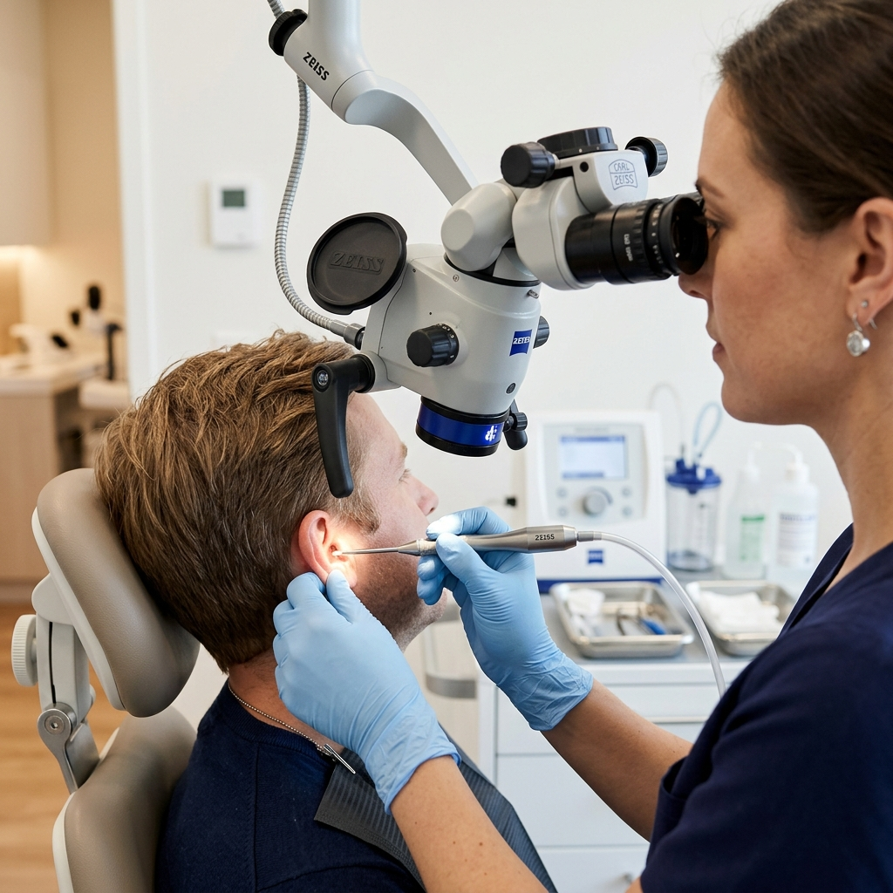
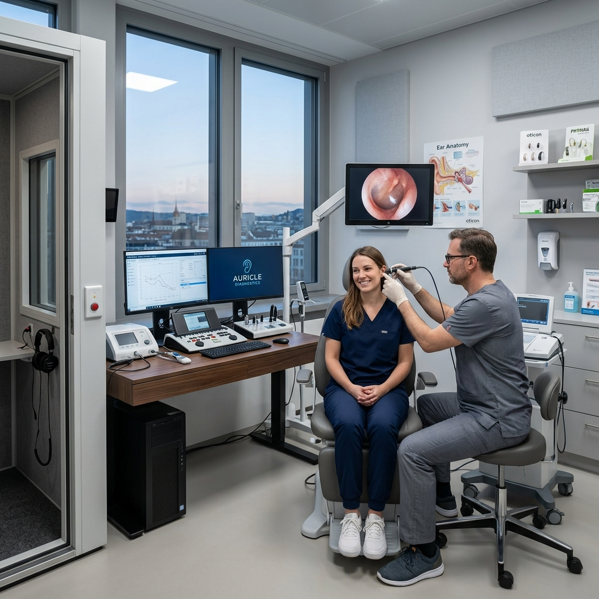
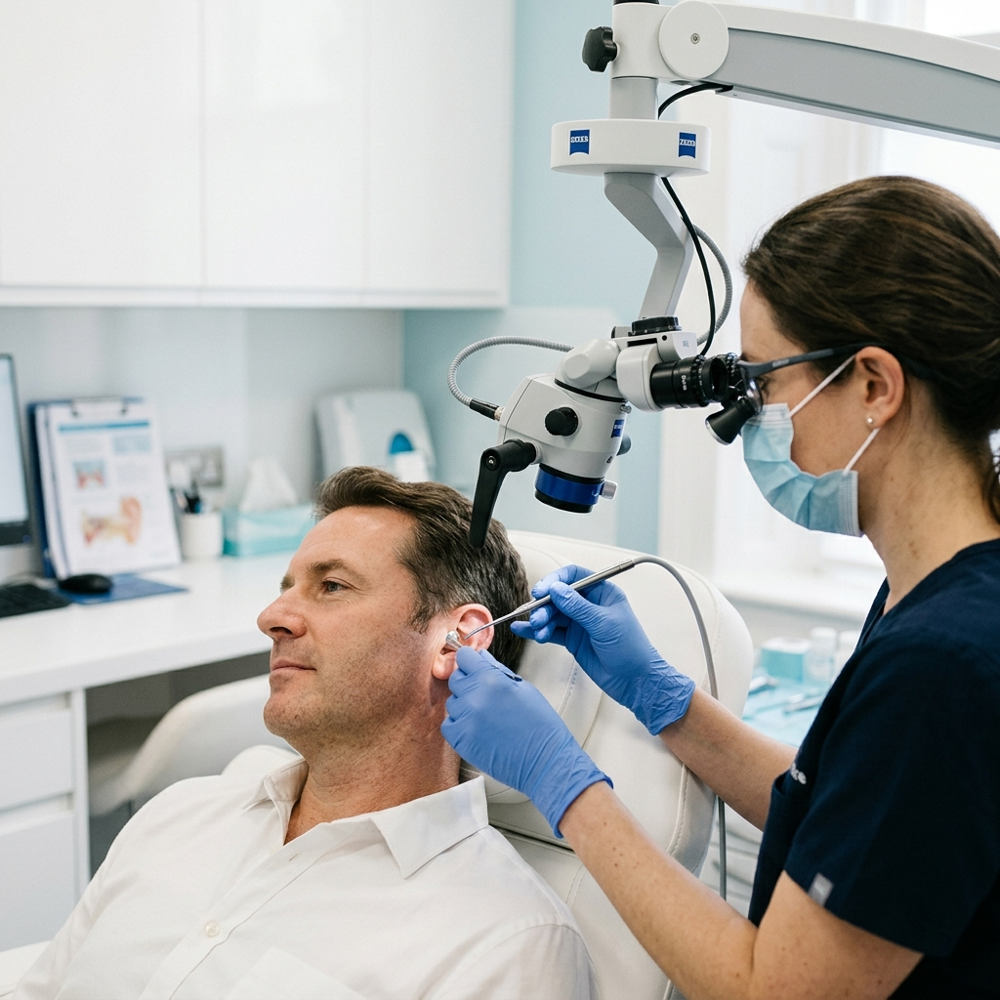
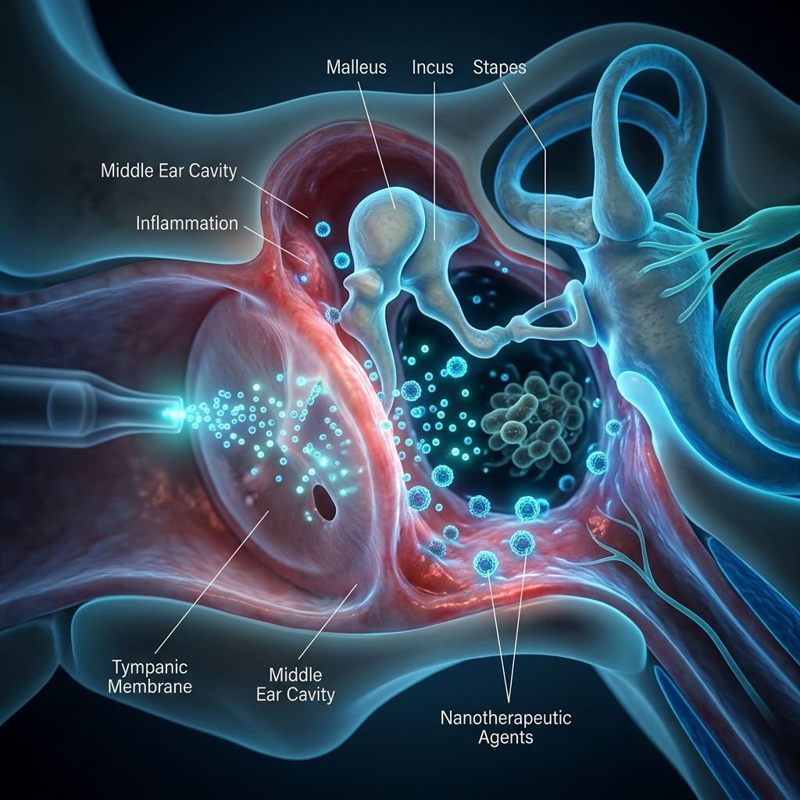
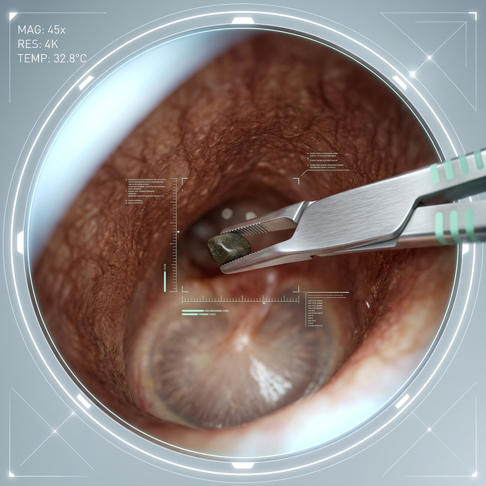
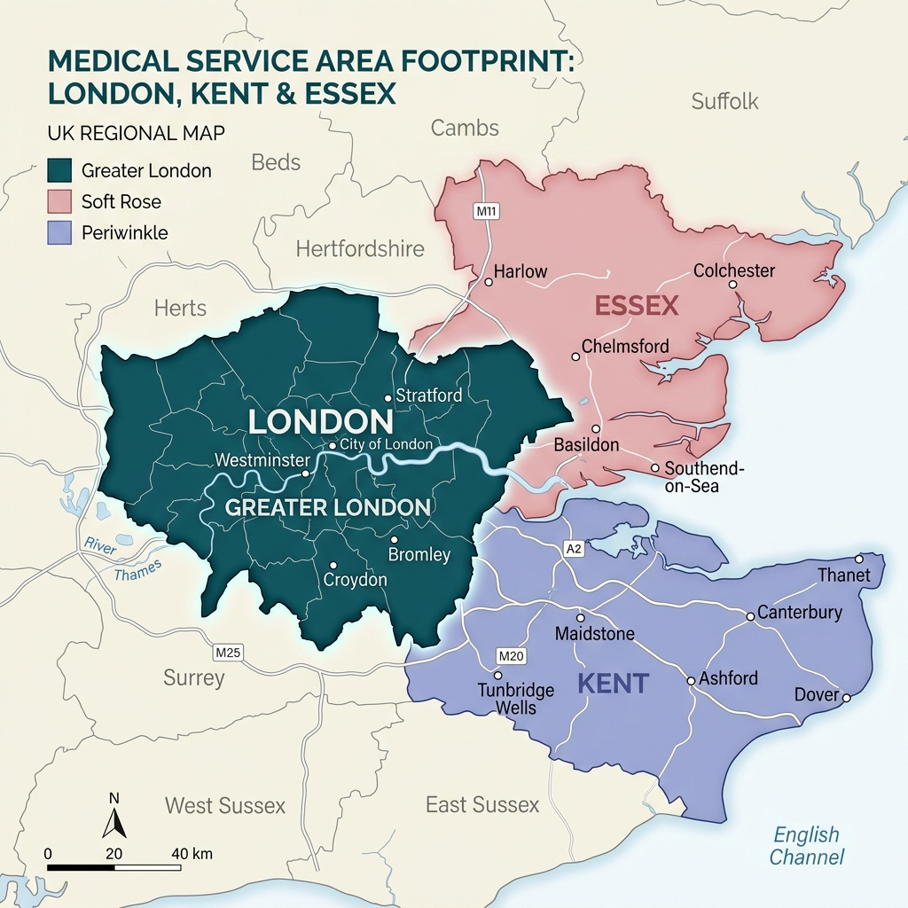

Mobile Ear Wax Removal London
Experience hospital-grade ear care in the comfort of your home. Our expert ENT Doctors are available 24/7 across London for safe, gentle microsuction.
Request Callback
Secure & Confidential
Expert Ear Care Right at Your Doorstep
Bringing expert mobile ear care to the comfort and privacy of your own home, 24/7 across London.

Ear Wax Removal
Specialist mobile micro-suction ear cleaning across London. The safest, most effective method for clear hearing.
Explore Treatment
Ear Infection Treatment
Professional diagnosis and treatment for painful ear infections. Safe for adults and children above 2 years.
Explore Treatment
Foreign Body Removal
Gentle and precise removal of foreign objects from the ear canal, performed by our experienced microsuction specialists.
Explore Treatment20k+
Procedures
Why choose Otic Ear Care?
Our experienced clinicians have performed over 20,000 procedures across NHS and private settings. Using safe, medical-grade microsuction techniques, we provide effective and comfortable ear care you can trust.
Mobile Service
We come to your home, office, or hotel anywhere in London.
24/7 Availability
Day or night, our specialist clinicians are on call for you.
Hospital-Grade Kit
Using world-class Carl Zeiss optics and DeVilbiss suction units.
Instant Results
Experience immediate relief and clearer hearing, right in your home.
What is Microsuction?
The gold standard for safe and effective ear wax removal. We use clinical-grade microscopes and calibrated suction to ensure absolute precision.
Micro-Observation
Using Carl Zeiss optics for unparalleled visual clarity within the ear canal.
Calibrated Suction
Medical-grade vacuuming that is gentle, dry, and exceptionally safe.
Specialist Care
Guided by NHS standards, ensuring a pain-free and professional experience.
DeVilBiss Suction
Hospital-grade safety & comfort.
Why Microsuction?
Our specialist clinicians use hospital-grade microsuction technology to provide a safe, dry, and highly effective ear cleaning service. This procedure is widely considered the gold standard for precision and patient comfort.
NHS Gold Standard
Practiced and supported by NICE guidance for ear care.
Lower Risk
Significantly safer for your eardrum than irrigation.
Better Tolerated
Safer, cleaner, and highly comfortable for all patients.
Expert Standards
Clinicians trained to professional NHS & private standards.
Itchy Ear Relief
Vital treatment for swimmer’s ear & otitis externa.
Instant Hearing
Immediate relief and clear hearing from your first visit.
Next-Gen Ear Treatments
Precision-engineered medical interventions for complex ear health, delivered with elite clinical standards at your convenience.

Ear Infection
Management
Elite clinical diagnosis and targeted intervention for severe infections. We provide immediate pain suppression and curative care.

Foreign Body
Extraction
High-precision extraction of obstacles using surgical instruments and 4K digital microscopy for absolute safety.
Specialist
Children's Ear Care
We offer a specialist children’s ear wax removal service in London, providing a safe, gentle, and stress-free environment for your child.
Experts in ear microsuction for babies, toddlers, and school-aged children.
Safe extraction of objects and blockages that cause pain or hearing loss.
We provide longer appointments, distracting multimedia, balloons, and animal stickers to ensure a positive experience.
Corporate
Partnerships
We are proud to provide professional ear care to some of the most prestigious music and media companies in London.
Boost employee wellbeing with our on-site or clinic-based ear cleaning services. Contact us for bespoke corporate rates.
Email Corporate TeamEmergency
Appointments
Immediate mobile ear wax removal clinics across London and the Home Counties. Available 24/7 for urgent relief.
Emergency appointments incur an additional fee of £175
Mobile Ear Wax Removal
Across London
Travel Included
Within Zones
Travel Charge
£50 - £100
If you require an appointment outside of the London areas we cover, a minimum travel fee of £175 will be charged.

Clinician Tracking
Live Updates
Patient Stories
Don't just take our word for it—see what our satisfied patients across London are saying about our premium mobile ear care.
"Absolutely fantastic service. Woke up with completely blocked ears and Dr Rampuri was at my flat in Chelsea within hours. Professional, fast, and I could hear perfectly again instantly."
Sarah J.
Chelsea, London
"I usually get quite nervous about medical procedures, but the ENT doctor was incredibly calm and reassuring. The fact they do it right in your living room is a game changer!"
Michael D.
Islington
"Incredible lifesavers. Called them at 10 PM on a Sunday before a flight when my ears clogged up totally. Best money I ever spent, the microsuction was totally painless."
Robert E.
Richmond